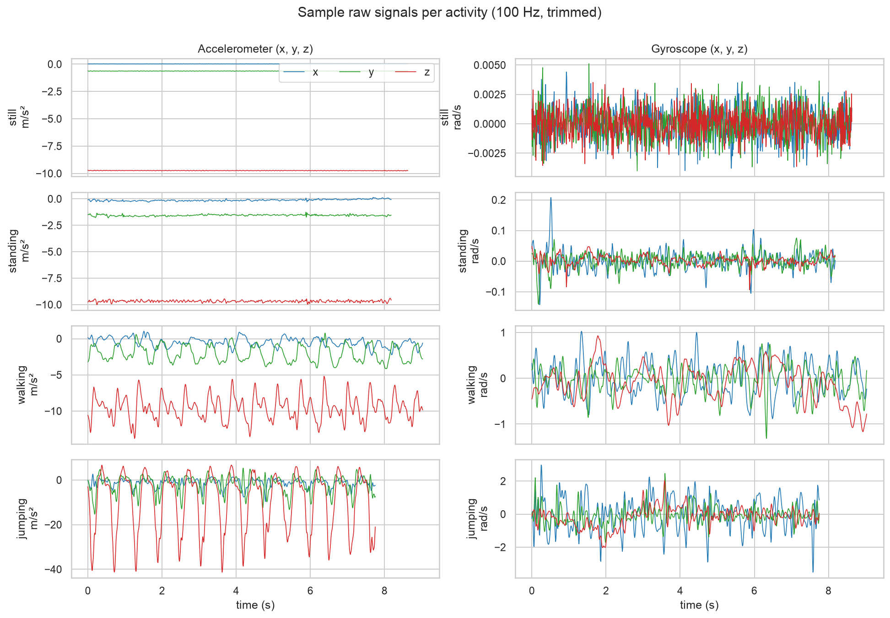
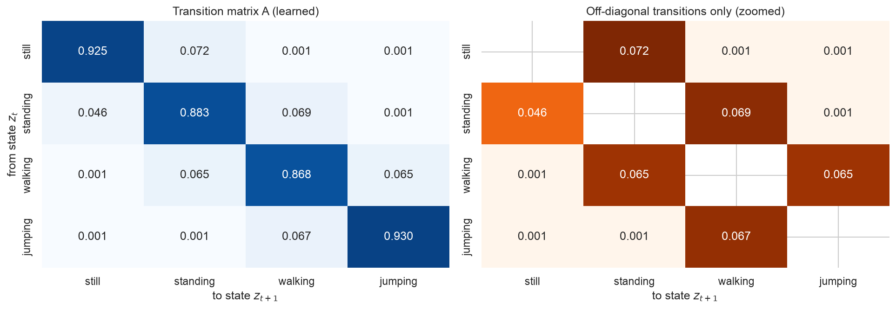
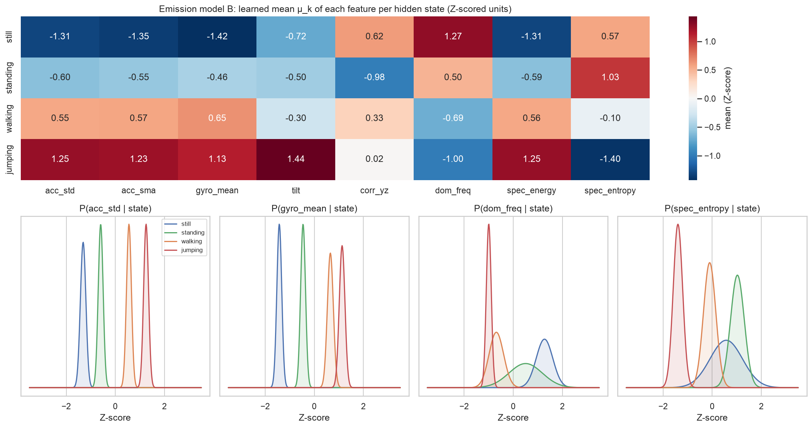
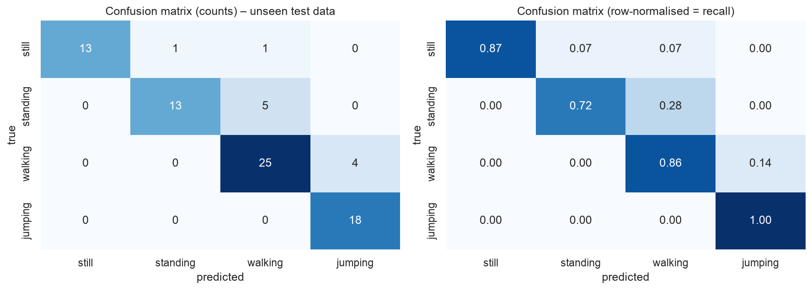
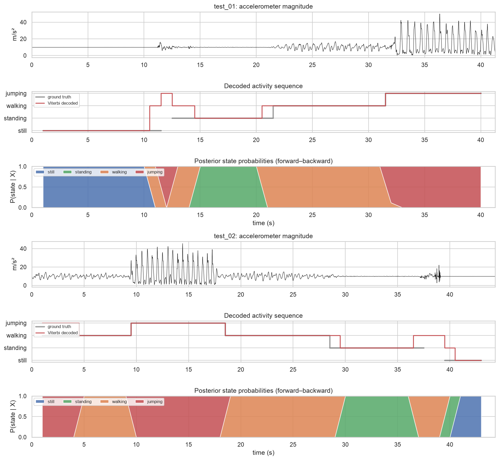

Students often spend long, unbroken hours studying, which is linked to poor posture, fatigue and reduced concentration. Our use case is a phone-based activity monitor for students that detects prolonged inactivity (the phone lying still on a desk, or the student standing idle) and nudges them to move, while recognising real activity (walking, jumping/exercise) so it does not interrupt genuine breaks. The true activity is never observed directly; only noisy accelerometer and gyroscope readings are. A Hidden Markov Model fits this problem: it treats the activity as a hidden state that evolves over time and links it probabilistically to the sensor features, so it can infer a temporally consistent activity timeline from the sensor stream.
| Participant / device | Jolly Gift Burabyo · iPhone 11 Pro (iOS) · Sensor Logger v1.68 |
|---|---|
| Sensors | Accelerometer (x, y, z), Gyroscope (x, y, z), plus Gravity (used to rebuild the raw accelerometer) |
| Sampling rate | Set to 100 Hz; measured from timestamps: 99.3 Hz (Δt = 10.07 ms) on every file |
| Training data | 52 files: 13 clips × 4 activities, ~10 s each (bedroom). After cleaning: still 111 s, standing 110 s, walking 114 s, jumping 117 s (all > 1 min 30 s) |
| Unseen test data | 2 continuous recordings (41 s and 44 s) made later in a different room (living room), each containing several activities in sequence |
Videos of data collection (full body, face visible, phone recording in hand): Standing – link · Walking – link · Jumping – link · Still – link
seconds_elapsed and linearly interpolated onto an exact 100 Hz grid. Any phone (e.g. a 50 Hz or 200 Hz
Android) can be resampled onto the same grid before windowing, so windows always contain the same number of samples.
Features (8 per window), computed on the magnitudes a=‖acc‖ and ω=‖gyro‖:
| Time domain | acc_std (motion intensity) · acc_sma (signal magnitude area, total dynamic acceleration) · gyro_mean (rotation: zero on the table, small tremor when hand-held) · tilt (phone orientation relative to gravity) · corr_yz (axis coupling during vertical bouncing) |
|---|---|
| Frequency domain (FFT) | dom_freq (step/jump rhythm ~1.6–2 Hz) · spec_energy (0.5–20 Hz power) · spec_entropy (peaked spectrum for rhythmic motion vs. flat spectrum for noise) |
| Normalisation | The intensity features span several orders of magnitude, so they were log10-transformed first to make them roughly Gaussian. All features were then Z-scored using the training-set mean and standard deviation only (re-used on the test set, so no leakage). This puts every feature on the same scale for the Gaussian emissions. |
| Hidden states Z | still, standing, walking, jumping (K = 4), one state per 1-s step |
|---|---|
| Observations X | the 8-dimensional Z-scored feature vector of each window |
| Transitions A | 4×4 matrix, Aij = P(zt+1=j | zt=i), learned by Baum–Welch |
| Emissions B | one diagonal-covariance Gaussian per state, 𝒩(x; μk, σ²k) (continuous observations) |
| Initial π | uniform: we make no assumption about the activity at the start of a recording |
Algorithms. Baum–Welch (EM) learns A, μ and σ² from the data. Its E-step is a scaled forward–backward pass, which avoids numerical underflow. It stops when the log-likelihood gain per observation drops below ε = 10-4. Viterbi (computed in log space) then decodes the single most likely activity sequence. This suits our metrics: sensitivity, specificity and accuracy all need one hard label per window, and the transition model discourages isolated label flips. Everything is implemented from scratch in NumPy. The implementation was first validated on synthetic data: the log-likelihood increased monotonically, A was recovered to within 0.04, and the Viterbi path was 99.5 % correct.
Training. Each training clip contains only one activity, so on its own it holds no information about transitions. The clips' window sequences were therefore chained into pseudo-continuous sessions that follow a plausible routine (still → standing → walking → jumping → walking → standing). The remaining clips were added as separate sequences. A pseudo-count of 0.1 keeps every transition possible. The emissions were initialised from the labelled windows, and Baum–Welch converged in 2 iterations because the classes are well separated. As a robustness check, we also ran Baum–Welch without labels, starting from k-means clusters. It converged in 3 iterations, rediscovered all four activities (100 % agreement on the training data) and reached 86.3 % on the test data.


The model was evaluated on the 2 unseen living-room recordings: 80 scored windows, with 3 windows of phone handling excluded. The metrics are one-vs-rest per state. "Number of Samples" is the number of 1-s windows.
| State (Activity) | Number of Samples | Sensitivity | Specificity | Overall Accuracy |
|---|---|---|---|---|
| Still | 15 | 0.867 | 1.000 | 0.862 (per-state one-vs-rest: 0.975 / 0.925 / 0.875 / 0.950) |
| Standing | 18 | 0.722 | 0.984 | |
| Walking | 29 | 0.862 | 0.882 | |
| Jumping | 18 | 1.000 | 0.935 |


Accuracy was 89.7 % on test_01 and 82.9 % on test_02. Jumping was never missed (sensitivity 1.0), and still was never predicted wrongly (specificity 1.0). Most errors fall in boundary windows: a 2-s window that straddles a switch contains two activities. In test_01, for example, the 2 s after picking the phone up are still "settling" movement and decode as walking. The largest single error is the first 4 s of test_02, where walking was labelled jumping. In that segment the phone was held noticeably more tilted (gravity on the z-axis −7.7 m/s² vs. −9.6 m/s² in training), and the learned tilt mean is highest for jumping (Figure 3). The orientation feature therefore outweighed the intensity features.
Conclusion. A Gaussian HMM implemented from scratch, with Baum–Welch training and Viterbi decoding, recognised four activities from a phone's motion sensors with 86 % accuracy on unseen recordings from a new environment. It learned a transition structure that reflects realistic behaviour. This makes it a practical basis for the study-break monitor, which mainly needs to separate "inactive" (still/standing) from "active" (walking/jumping) reliably.